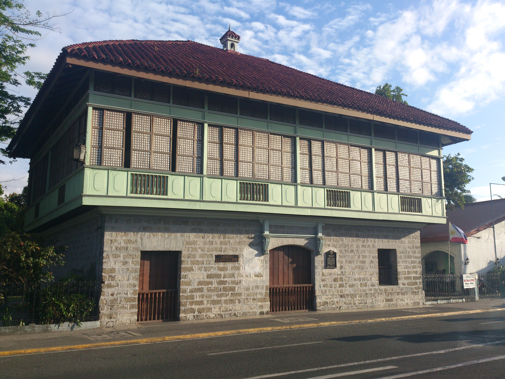

The Rizal Shrine in Calamba, Laguna is the ancestral home and birthplace of Dr. Jos Rizal — the Philippines' national hero, novelist, poet, ophthalmologist, and revolutionary martyr. Walk through the rooms where he grew up, see his personal belongings, and stand in the house that shaped the man who changed Philippine history.

The Rizal Shrine in Calamba, Laguna is the ancestral home of Dr. Jos Protasio Rizal Mercado y Alonso Realonda — the Philippines' national hero, born here on June 19, 1861. The house is a beautifully restored example of a 19th-century Filipino principalia home — a two-story bahay na bato (stone-and-wood house) with a nipa palm roof, wide wooden floors, and the distinctive architecture of prosperous Laguna families of the Spanish colonial era.
Rizal grew up in this house in Calamba, surrounded by the fertile rice fields and the shores of Laguna de Bay. His childhood here — the stories his mother told him, the landscape he observed, the injustices he witnessed — shaped the consciousness that would produce Noli Me Tangere and El Filibusterismo, the two novels that ignited the Philippine Revolution. The house is now a National Cultural Treasure and one of the most important heritage sites in the Philippines.
The shrine complex includes the ancestral house (a faithful reconstruction of the original, which was demolished during the American period), a garden with a life-size statue of Rizal, and a museum with personal artifacts, documents, and exhibits on Rizal's life, works, and martyrdom. The adjacent Calamba City Hall plaza features a large Rizal monument and is the center of the annual Rizal Day celebrations.
The Rizal Shrine is located in Calamba City, Laguna — about 54 km south of Manila. It's easily accessible by bus or car via SLEX.
Take a JAC Liner, DLTB, or Jam Liner bus from Buendia (Pasay) or Cubao to Calamba, Laguna. Buses run frequently throughout the day. From the Calamba terminal, take a tricycle to the Rizal Shrine (about 10 minutes).
Manila to Calamba: ~1.5₱2 hours | ~₱80–₱120Drive via SLEX — Calamba exit. The shrine is near the Calamba City Hall in the town center. Having your own vehicle makes it easy to combine with Pagsanjan Falls (30 minutes away) or Enchanted Kingdom in Santa Rosa.
Drive: ~1₱1.5 hours | Parking available at the shrineThe shrine complex includes the ancestral house, the garden, and the museum. Guided tours are available and highly recommended — the guides provide rich context about Rizal's childhood, his family, and the historical significance of each room and artifact.
Entrance fee: ~₱50–₱75 | Allow 1₱2 hoursAfter the shrine, walk to the adjacent Calamba City Hall plaza to see the large Rizal monument and the historic Calamba Church (San Juan Bautista Parish). The plaza is the heart of Calamba's heritage district and a pleasant place to walk.
5-minute walk from the shrine | Great photo opportunitiesClick any pin to explore Calamba and nearby Laguna attractions.
Calamba is the perfect base for a full Laguna day trip — combine the Rizal Shrine with Pagsanjan Falls or Enchanted Kingdom for a complete experience.
Arrive at the shrine when it opens at 8 AM. The morning light is beautiful in the garden and the ancestral house is less crowded early. Take the guided tour for the full historical context.
Walk to the adjacent plaza to see the Rizal monument and the historic San Juan Bautista Parish Church. The church dates to the Spanish colonial period and is closely associated with Rizal's family.
Calamba is famous for its natural hot springs — there are several resort complexes in the area offering hot spring pools. A relaxing mid-morning soak before heading to the next destination.
Have lunch at one of the restaurants near the Calamba plaza. Laguna is known for its buko pie (coconut pie) — buy some from the famous roadside stalls along the highway for pasalubong.
Drive 30 minutes to Pagsanjan for the afternoon boat ride through the gorge. Register at the boat station by 2 PM for a late afternoon trip — the gorge light is beautiful in the afternoon.
Drive 15 minutes north to Enchanted Kingdom in Santa Rosa for an afternoon of rides and attractions. Perfect for families or groups who want to combine heritage and fun in one day.
"Standing in the room where Jos Rizal was born is one of the most moving experiences I've had in the Philippines. The house is beautifully restored and the guided tour brings the history to life in a way that no textbook can. You understand why this man — born in this house, in this town, by this lake — became the conscience of a nation. Essential for anyone who wants to understand the Philippines."
"I visited the Rizal Shrine as part of a Laguna day trip with Pagsanjan Falls and it was the perfect combination — the intellectual and historical depth of the shrine in the morning, then the pure physical thrill of the gorge in the afternoon. The shrine is small but incredibly well-curated. The guide was passionate and knowledgeable. Don't skip this one."